건설기계설비기사 (2020-08-22 기출문제)
1과목: 재료역학
1. 길이 10m, 단면적 2cm2인 철봉을 100℃에서 그림과 같이 양단을 고정했다. 이 봉의 온도가 20℃로 되었을 때 인장력은 약 몇 kN인가? (단, 세로탄성계수는 200GPa, 선팽창계수 a = 0.000012/℃ 이다.)
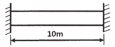
- 19.2
- 25.5
- 38.4
- 48.5
(정답률: 37%)

2. 다음 외팔보가 균일분포 하중을 받을 때, 굽힘에 의한 탄성 변형에너지는? (단, 굽힘강성 EI는 일정하다.)
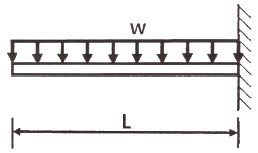
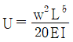
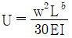
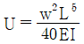
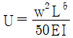
(정답률: 30%)
3. 그림과 같은 단순 지지보에 모멘트(M)와 균일분포하중(w)이 작용할 때, A점의 반력은?
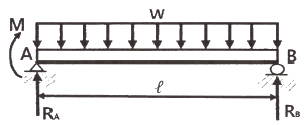
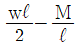
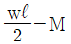
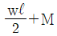
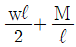
(정답률: 33%)
4. 다음 그림과 같은 부채꼴의 도심(centroid)의 위치
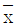
는?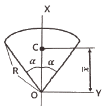
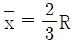
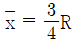
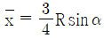
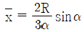
(정답률: 30%)
5. 비틀림모멘트 2kN·m가 지름 50mm인 축에 작용하고 있다. 축의 길이가 2m 일 때 축의 비틀림각은 약 몇 rad 인가? (단, 축의 전단탄성계수는 85GPa 이다.)
- 0.019
- 0.028
- 0.⑤4
- 0.077
(정답률: 36%)
6. 그림과 같이 원형단면을 가진 보가 인장하중 P = 90kN을 받는다. 이 보는 강(steel)으로 이루어져 있고, 세로탄성계수는 210GPa이며 포와송비 μ = 1/3이다. 이 보의 체적변화 △V는 약 몇 mm3인가? (단, 보의 직경 d = 30mm, 길이 L = 5m 이다.)
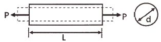
- 114.28
- 314.28
- 514.28
- 714.28
(정답률: 27%)
7. 판 두께 3mm를 사용하여 내압 20kN/cm2을 받을 수 있는 구형(spherical) 내압용기를 만들려고 할 때, 이 용기의 최대 안전내경 d를 구하면 몇 cm 인가? (단, 이 재료의 허용 인장응력을 σw = 800kN/cm2 으로 한다.)
- 24
- 48
- 72
- 96
(정답률: 28%)
8. 그림과 같이 800N의 힘이 브래킷의 A에 작용하고 있다. 이 힘의 점 B에 대한 모멘트는 약 몇 N·m 인가?
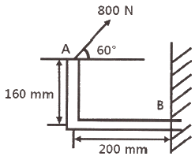
- 160.6
- 202.6
- 238.6
- 253.6
(정답률: 36%)
9. 그림과 같이 균일단면을 가진 단순보에 균일하중 ω kN/m이 작용할 때, 이 보의 탄성 곡선식은? (단, 보의 굽힘 강성 EI는 일정하고, 자중은 무시한다.)
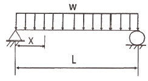
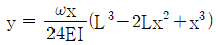
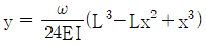
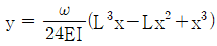
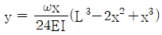
(정답률: 19%)
10. 다음과 같이 스팬(span) 중앙에 힌지(hinge)를 가진 보의 최대 굽힘모멘트는 얼마인가?
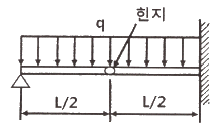
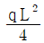
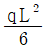
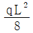
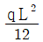
(정답률: 16%)
11. 길이 3m, 단면의 지름이 3cm인 균일 단면의 알루미늄 봉이 있다. 이 봉에 인장하중 20kN이 걸리면 봉은 약 몇 cm 늘어나는가? (단, 세로탄성계수는 72GPa 이다.)
- 0.118
- 0.239
- 1.18
- 2.39
(정답률: 31%)
12. 길이가 5m 이고 직경이 0.1m인 양단고정보 중앙에 200N의 집중하중이 작용할 경우 보의 중앙에서의 처짐은 약 몇 m 인가? (단, 보의 세로탄성계수는 200GPa 이다.)
- 2.36 × 10-5
- 1.33 × 10-4
- 4.58 × 10-4
- 1.06 × 10-3
(정답률: 33%)
13. 다음 구조물에 하중 P = 1kN이 작용할 때 연결핀에 걸리는 전단응력은 약 얼마인가? (단, 연결핀의 지름은 5mm 이다.)
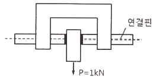
- 25.46 kPa
- 50.92 kPa
- 25.46 MPa
- 50.92 MPa
(정답률: 30%)
14. 100rpm으로 30kW를 전달시키는 길이 1m, 지름 7cm인 둥근 축단의 비틀림각은 약 몇 rad인가? (단, 전단탄성계수는 83GPa 이다.)
- 0.26
- 0.30
- 0.015
- 0.009
(정답률: 38%)
15. 그림과 같은 돌출보에서 ω = 120 kN/m 의 등분포 하중이 작용할 때, 중앙 부분에서의 최대 굽힘응력은 약 몇 MPa인가? (단, 단면은 표준 I형 보로 높이 h = 60cm이고, 단면 2차 모멘트 I = 98200 cm4 이다.)
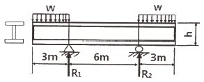
- 125
- 165
- 185
- 195
(정답률: 29%)
16. 다음과 같은 평면응력 상태에서 최대 주응력 σ1은?
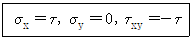
- 1.414τ
- 1.80τ
- 1.618τ
- 2.828τ
(정답률: 35%)
17. 그림과 같이 외팔보의 끝에 집중하중 P가 작용할 때 자유단에서의 처짐각 θ는? (단, 보의 굽힘강성 EI는 일정하다.)
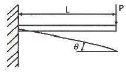
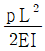
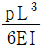
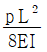
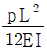
(정답률: 33%)
18. 그림과 같은 단주에서 편심거리 e에 압축하중 P = 80kN이 작용할 때 단면에 인장응력이 생기지 않기 위한 e의 한계는 몇 cm 인가? (단, G는 편심 하중이 작용하는 단주 끝단의 평면상 위치를 의미한다.)
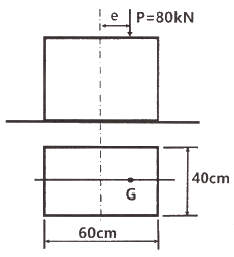
- 8
- 10
- 12
- 14
(정답률: 27%)
19. 지름 70mm인 환봉에 20MPa 의 최대전단응력이 생겼을 때 비틀림모멘트는 약 몇 kN·m인가?
- 4.50
- 3.60
- 2.70
- 1.35
(정답률: 35%)
20. 0.4m × 0.4m인 정사각형 ABCD를 아래 그림에 나타내었다. 하중을 가한 후의 변형상태는 점선으로 나타내었다. 이때 A지점에서 전단 변형률 성분의 평균값(γxy)는?
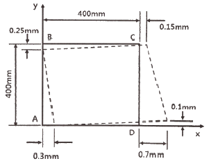
- 0.001
- 0.000625
- -0.00⑤
- -0.000625
(정답률: 15%)
2과목: 기계열역학
21. 다음 중 강도성 상태량(itensive property)이 아닌 것은?
- 온도
- 내부에너지
- 밀도
- 압력
(정답률: 34%)
22. 클라우지우스(Clausius)의 부등식을 옳게 나타낸 것은? (단, T는 절대온도, Q는 시스템으로 공급된 전체 열량을 나타낸다.)
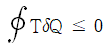
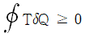
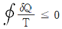
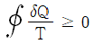
(정답률: 35%)
23. 이상기체 2kg이 압력 98kPa, 온도 25℃ 상태에서 체적이 0.5m3였다면 이 이상기체의 기체상수는 약 몇 J/(kg·K)인가?
- 79
- 82
- 97
- 102
(정답률: 34%)
24. 이상적인 랭킨사이클에서 터빈 입구 온도가 350℃이고, 75kPa과 3MPa의 압력범위에서 작동한다. 펌프 입구와 출구, 터빈 입구와 출구에서 엔탈피는 각각 384.4 kJ/kg, 387.5 kJ/kg, 3116 kJ/kg, 2403 kJ/kg이다. 펌프일을 고려한 사이클의 열효율과 펌프일을 무시한 사이클의 열효율 차이는 약 몇 % 인가?
- 0.0011
- 0.092
- 0.11
- 0.18
(정답률: 14%)
25. 단열된 노즐에 유체가 10m/s의 속도로 들어와서 200m/s의 속도로 가속되어 나간다. 출구에서의 엔탈피가 2770 kJ/kg 일 때 입구에서의 엔탈피는 약 몇 kJ/kg 인가?
- 4370
- 4210
- 2850
- 2790
(정답률: 31%)
26. 고온열원(T1)과 저온열원(T2) 사이에서 작동하는 역카르노 사이클에 의한 열펌프(heat pump)의 성능계수는?
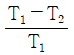
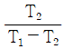
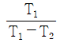
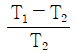
(정답률: 30%)
27. 카르노사이클로 작동하는 열기관이 1000℃의 열원과 300K의 대기 사이에서 작동한다. 이 열기관이 사이클 당 100kJ의 일을 할 경우 사이클 당 1000℃의 열원으로부터 받은 열량은 약 몇 kJ인가?
- 70.0
- 76.4
- 130.8
- 142.9
(정답률: 27%)
28. 이상기체로 작동하는 어떤 기관의 압축비가 17이다. 압축 전의 압력 및 온도는 112kPa, 25℃이고 압축 후의 압력은 4350 kPa 이었다. 압축 후의 온도는 약 몇 ℃ 인가?
- 53.7
- 180.2
- 236.4
- 407.8
(정답률: 22%)
29. 어떤 유체의 밀도가 741 kg/m3이다. 이 유체의 비체적은 약 몇 m3/kg인가?
- 0.78 × 10-3
- 1.35 × 10-3
- 2.35 × 10-3
- 2.98 × 10-3
(정답률: 34%)
30. 다음 중 스테판-볼츠만의 법칙과 관련이 있는 열전달은?
- 대류
- 복사
- 전도
- 응축
(정답률: 31%)
31. 기체가 0.3MPa로 일정한 압력 하에 8m3에서 4m3까지 마찰 없이 압축되면서 동시에 500kJ의 열을 외부로 방출하였다면, 내부에너지의 변화는 약 몇 kJ인가?
- 700
- 1700
- 1200
- 1400
(정답률: 28%)
32. 어떤 물질에서 기체상수(R)가 0.189 kJ/(kg·K), 임계온도가 3⑤K, 임계압력이 7380kPa이다. 이 기체의 압축성 인자(compressibility factor, Z)가 다음가 같은 관계식을 나타낸다고 할 때 이 물질의 20℃, 1000kPa 상태에서의 비체적(v)은 약 몇 m3/kg 인가? (단, P는 압력, T는 절대온도, Pr은 환산압력, Tr은 환산온도를 나타낸다.)
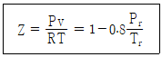
- 0.0111
- 0.0303
- 0.0491
- 0.⑤54
(정답률: 12%)
33. 전류 25A, 전압 13V를 가하여 축전지를 충전하고 있다. 충전하는 동안 축전지로부터 15W의 열손실이 있다. 축전지의 내부에너지 변화율은 약 몇 W인가?
- 310
- 340
- 370
- 420
(정답률: 25%)
34. 냉매가 갖추어야 할 요건으로 틀린 것은?
- 증발온도에서 높은 잠열을 가져야 한다.
- 열전도율이 커야 한다.
- 표면장력이 커야 한다.
- 불활성이고 안전하며 비가연성이어야 한다.
(정답률: 34%)
35. 100℃의 구리 10kg을 20℃의 물 2kg이 들어있는 단열 용기에 넣었다. 물과 구리 사이의 열전달을 통한 평형 온도는 약 몇 ℃ 인가? (단, 구리 비열은 0.45 kJ/(kg·K), 물 비열은 4.2 kJ/(kg·K) 이다.)
- 48
- 54
- 60
- 68
(정답률: 32%)
36. 압력이 0.2MPa, 온도가 20℃의 공기를 압력이 2MPa로 될 때까지 가역단열 압축했을 때 온도는 약 몇 ℃ 인가? (단, 공기는 비열비가 1.4인 이상기체로 간주한다.)
- 225.7
- 273.7
- 292.7
- 358.7
(정답률: 31%)
37. 이상적인 교축과정(throttling process)을 해석하는데 있어서 다음 설명 중 옳지 않은 것은?
- 엔트로피는 증가한다.
- 엔탈피의 변화가 없다고 본다.
- 정압과정으로 간주한다.
- 냉동기의 팽창밸브의 이론적인 해석에 적용될 수 있다.
(정답률: 22%)
38. 다음은 오토(Otto) 사이클의 온도-엔트로피(T-S) 선도이다. 이 사이클의 열효율을 온도를 이용하여 나타낼 때 옳은 것은? (단, 공기의 비열은 일정한 것으로 본다.)
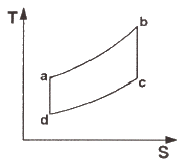
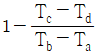
(정답률: 32%)
39. 어떤 습증기의 엔트로피가 6.78 kJ/(kg·K)라고 할 때 이 습증기의 엔탈피는 약 몇 kJ/kg인가? (단, 이 기체의 포화액 및 포화증기의 엔탈피와 엔트로피는 다음과 같다.)
- 2365
- 2402
- 2473
- 2511
(정답률: 29%)
40. 압력(P) - 부피(V) 선도에서 이상기체가 그림과 같은 사이클로 작동한다고 할 때 한 사이클 동안 행한 일은 어떻게 나타내는가?
(정답률: 34%)
3과목: 기계유체역학
41. 어떤 물리적인 계(syystem)에서 물리량 F가 물리량 A, B, C, D의 함수 관계가 있다고할 때, 차원해석을 한 결과 두 개의 무차원수, 와 를 구할 수 있었다. 그리고 모형실험을 하여 A = 1, B = 1, C = 1, D = 1일 때 F = F1을 구할 수 있었다. 여기서 A = 2, B = 4, C = 1, D = 2 인 원형의 F는 어떤 값을 가지는가? (단, 모든 값들은 SI단위를 가진다.)
- F1
- 16F1
- 32F1
- 위의 자료만으로는 예측할 수 없다.
(정답률: 22%)
42. 그림곽 같은 노즐을 통하여 유량 Q만큼의 유체가 대기로 분출될 때, 노즐에 미치는 유체의 힘 F는? (단, A1, A2는 노즐의 단면 1, 2에서의 단면적이고 ρ는 유체의 밀도이다.)
(정답률: 18%)
43. 직경 1cm인 원형관 내의 물의 유동에 대한 천이 레이놀즈수는 2300이다. 천이가 일어날 때 물의 평균유속(m/s)은 얼마인가? (단, 물의 동점성계수는 10-6 m2/s이다.)
- 0.23
- 0.46
- 2.3
- 4.6
(정답률: 31%)
44. 낙차가 100m인 수력발전소에서 유량이 5m3/s 이면 수력터빈에서 발생하는 동력(MW)은 얼마인가? (단, 유도관의 마찰손실은 10m이고, 터빈의 효율은 80% 이다.)
- 3.53
- 3.92
- 4.41
- 5.52
(정답률: 22%)
45. 어떤 물리량 사이의 함수관계가 다음과 같이 주어졌을 때, 독립 무차원수 Pi항은 몇 개인가? (단, a는 가속도, V는 속도, t는 시간, ν는 동점성계수, L은 길이이다.)
- 1
- 2
- 3
- 4
(정답률: 23%)
46. 공기의 속도 24m/s인 풍동 내에서 익현길이 1m, 익의 폭 5m인 날개에 작용하는 양력(N)은 얼마인가? (단, 공기의 밀도는 1.2 kg/m3, 양력계수는 0.455 이다.)
- 1572
- 786
- 393
- 91
(정답률: 31%)
47. 수면의 차이가 H인 두 저수지 사이에 지름 d, 길이 ℓ인 관로가 연결되어 있을 때 관로에서의 평균 유속(V)을 나타내는 식은? (단, f는 관마찰계수이고, g는 중력가속도이며, K1, K2는 관입구와 출구에서의 부차적 손실계수이다.)
(정답률: 30%)
48. 수평원관 속에 정상류의 층류흐름이 있을 때 전단응력에 대한 설명으로 옳은 것은?
- 단면 전체에서 일정하다.
- 벽면에서 0이고 관 중심까지 선형적으로 증가한다.
- 관 중심에서 0이고 반지름 방향으로 선형적으로 증가한다.
- 관 중심에서 0이고 반지름 방향으로 중심으로부터 거리의 제곱에 비례하여 증가한다.
(정답률: 29%)
49. 프란틀의 혼합거리(mixing length)에 대한 설명으로 옳은 것은?
- 전단응력과 무관하다.
- 벽에서 0이다.
- 항상 일정하다.
- 층류 유동문제를 계산하는데 유용하다.
(정답률: 22%)
50. (x, y)평면에서의 유동함수(정상, 비압축성 유동)가 다음과 같이 정의된다면 x = 4m, y = 6m의 위치에서의 속도(m/s)는 얼마인ㄱ?
- 156
- 92
- 52
- 38
(정답률: 21%)
51. 체적이 30m3인 어느 기름의 무게가 247kN이었다면 비중은 얼마인가? (단, 물의 밀도는 1000kg/m3 이다.)
- 0.80
- 0.82
- 0.84
- 0.86
(정답률: 27%)
52. 3.6m3/min을 양수하는 펌프의 송출구의 안지름이 23cm일 때 평균 유속(m/s)은 얼마인가?
- 0.96
- 1.20
- 1.32
- 1.44
(정답률: 33%)
53. 그림과 같이 원판 수문이 물속에 설치되어 있다. 그림 중 C는 압력의 중심이고, G는 원판의 도심이다. 원판의 지름을 d라 하면 작용점의 위치 η는?
(정답률: 30%)
54. 국소 대기압이 1atm이라고 할 때, 다음 중 가장 높은 압력은?
- 0.13 atm(gage pressure)
- 115 kPa(absolute pressure)
- 1.1 atm(absolute pressure)
- 11 mH2O(absolute pressure)
(정답률: 24%)
55. 그림과 같이 유리간 A, B 부분의 안지름은 각각 30cm, 10cm 이다. 이 관에 물을 흐르게 하였더니 A에 세운 관에는 물이 60cm, B에 세운 관에는 물이 30cm 올라갔다. A와 B 각 부분에서 물의 속도(m/s)는?
- VA = 2.73, VB = 24.5
- VA = 2.44, VB = 22.0
- VA = 0.542, VB = 4.88
- VA = 0.271, VB = 2.44
(정답률: 17%)
56. 유체의 정의를 가장 올바르게 나타낸 것은?
- 아무리 작은 전단응력에도 저항할 수 없어 연속적으로 변형하는 물질
- 탄성계수가 0을 초과하는 물질
- 수직응력을 가해도 물체가 변하지 않는 물질
- 전단응력이 가해질 때 일정한 양의 변형이 유지되는 물질
(정답률: 31%)
57. 해수의 비중은 1.025이다. 바닷물 속 10m 깊이에서 작업하는 해녀가 받는 계기압력(kPa)은 약 얼마인가?
- 94.5
- 100.5
- 1⑤.6
- 112.7
(정답률: 29%)
58. 밀도 1.6 kg/m3인 기체가 흐르는 관에 설치한 피토 정압관(Pitot-static tube)의 두 단자 간 압력차가 4cmH2O 이었다면 기체의 속도(m/s)는 얼마인가?
- 7
- 14
- 22
- 28
(정답률: 20%)
59. 비압축성 유체가 그림과 같이 단면적 A(x) = 1 – 0.04x[m2]로 변화하는 통로 내를 정상상태로 흐를 때 P점(x=0)에서의 가속도(m/s2)는 얼마인가? (단, P점에서의 속도는 2m/s, 단면적은 1m2이며, 각 단면에서 유속은 균일하다고 가정한다.)
- -0.08
- 0
- 0.08
- 0.16
(정답률: 8%)
60. 그림과 같은 두 개의 고정된 평판 사이에 얇은 관이 있다. 얇은 판 상부에는 점성계수가 0.⑤ N·s/m2인 유체가 있고 하부에는 점성계수가 0.1 N·s/m2인 유체가 있다. 이 판을 일정속도 0.5m/s로 끌 때, 끄는 힘이 최소가 되는 거리 y는? (단, 고정 평판사이의 폭은 h(m), 평판들 사이의 속도분포는 선형이라고 가정한다.)
- 0.293h
- 0.482h
- 0.586h
- 0.879h
(정답률: 14%)
4과목: 유체기계 및 유압기기
61. 다음 수력기기 중 반동 수차에 해당하는 것은?
- 펠톤 수차, 프란시스 수차
- 프란시스 수차, 프로펠러 수차
- 카플란 수차, 펠톤 수차
- 펠톤 수차, 프로펠러 수차
(정답률: 52%)
62. 프란시스 수차에서 사용하는 흡출관에 관한 설명으로 틀린 것은?
- 흡출관은 회전차에서 나온 물이 가진 속도수두와 방수면 사이의 낙차를 유효하게 이용하기 위해 사용한다.
- 커비테이션을 일으키지 않기 위해서 흡출관의 높이는 일반적으로 7m 이하로 한다.
- 흡출관 입구의 속도가 빠를수록 흡출관의 효율은 커진다.
- 흡출관은 일반적으로 원심형, 무디형, 엘보형이 있고, 이 중 엘보형이 효율이 제일 높다.
(정답률: 49%)
63. 수차 중 물의 송출 방향이 축방향이 아닌 것은?
- 펠톤 수차
- 프란시스 수차
- 사류 수차
- 프로펠러 수차
(정답률: 39%)
64. 송풍기를 특성곡선의 꼭짓점 이하 닫힘 상태점 근방에서 풍량을 조정할 때 풍압이 진동하고 풍량에 맥동이 일어나며, 격렬한 소음과 운전불능에 빠질 수 있게 되는 현상은?
- 서징 현상
- 선회 실속 현상
- 수격 현상
- 쵸킹 현상
(정답률: 47%)
65. 수차의 에너지 변화과정으로 옳은 것은?
- 위치 에너지 → 기계 에너지
- 기계 에너지 → 위치 에너지
- 열 에너지 → 기계 에너지
- 기계 에너지 → 열 에너지
(정답률: 63%)
66. 다음 중 기어펌프는 어느 형식의 펌프에 해당하는가?
- 축류펌프
- 원심펌프
- 왕복식펌프
- 회전펌프
(정답률: 51%)
67. 토크컨버터에서 임펠러가 작동유에 준 토크를 Tp, 스테이터가 작동유에 준 토크를 Ts, 런너가 받는 토크를 Tt라고 할 때 이들의 관계를 바르게 표현한 것은?
- Tp = Ts + Tt
- Ts = Tp + Tt
- Tt = Tp + Ts
- Tt = Tp – Ts
(정답률: 47%)
68. 원심펌프 회전차 출구의 직경 450mm, 회전수 1200rpm, 유체의 유입각도(α1) 90°, 유체의 유출각도(β2) 25°, 유속은 12m/s일 때, 이론양정(m)은 얼마인가?
- 32.5
- 41.7
- 48.6
- 50.3
(정답률: 14%)
69. 진공펌프의 설치 목적에 대한 설명으로 옳은 것은?
- 용기에 있는 공기 분자를 펌프를 통해 배기시키는 것. 즉, 용기내의 기체 밀도를 감소시키는 것이 펌프의 목적이다.
- 용기에 있는 물을 펌프를 통해 배기시키는 것. 즉, 용기내 유체의 체적을 감소시키는 것이 펌프의 목적이다.
- 용기에 있는 공기 분자를 펌프를 통해 흡입시키는 것. 즉, 용기내의 기체 밀도를 증가시키는 것이 펌프의 목적이고, 기체 밀도가 클수록 좋은 진공이라 할 수 있다.
- 용기에 있는 물을 펌프를 통해 배기시키는 것. 즉, 용기내 유체의 체적을 증가시키는 것이 펌프의 목적이다.
(정답률: 46%)
70. 원심펌프의 원리와 구조에 관한 설명으로 틀린 것은?
- 변곡된 다수의 깃(blade)이 달린 회전차가 밀폐된 케이싱 내에서 회전함으로써 발생하는 원심력의 작용에 따라 송수된다.
- 액체(주로 물)는 회전차의 중심에서 흡입되어 반지름 방향으로 흐른다.
- 와류실은와실에서 나온 물을 모아서 송출관쪽으로 보내는 스파이럴형의 동체이다.
- 와실은 송출되는 물의 압력에너지를 되도록 손실을 적게 하여 속도에너지를 변화하는 역할을 한다.
(정답률: 30%)
71. 일반적인 베인 펌프의 특징으로 적절하지 않은 것은?
- 부품수가 많다.
- 비교적 고장이 적고 보수가 용이하다.
- 펌프의 구동 동력에 비해 형상이 소형이다.
- 기어 펌프나 피스톤 펌프에 비해 토출 압력의 맥동이 크다.
(정답률: 52%)
72. 어큐뮬레이터의 용도와 취급에 대한 설명으로 틀린 것은?
- 누설유량을 보충해 주는 펌프 대용 역할을 한다.
- 어큐뮬레이터에 부속쇠 등을 용접하거나 가공, 구멍 뚫기 등을 해서는 안된다.
- 어큐뮬레이터를 운반, 결합, 분리 등을 할 때는 봉입가스를 유지하여야 한다.
- 유압 펌프에 발생하는 맥동을 흡수하여 이상 압력을 억제하여 진동이나 소음을 방지한다.
(정답률: 53%)
73. 상시 개방형 밸브로 옳은 것은?
- 감압 밸브
- 무부하 밸브
- 릴리프 밸브
- 카운터 밸런스 밸브
(정답률: 44%)
74. 유압유의 점도가 낮을 때 유압 장치에 미치는 영향으로 적절하지 않은 것은?
- 배관 저항 증대
- 유압유의 누설 증가
- 펌프의 용적 효율 저하
- 정확한 작동과 정밀한 제어의 곤란
(정답률: 55%)
75. 그림과 같은 유압기호가 나타내는 것은? (단, 그림의 기호는 간략 기호이며, 간략 기호에서 유로의 화살표는 압력의 보상을 나타낸다.)
- 가변 교축 밸브
- 무부하 릴리프 밸브
- 직렬형 유량조정 밸브
- 바이패스형 유량조정 밸브
(정답률: 46%)
76. 실린더 입구의 분기 회로에 유량 제어 밸브를 설치하여 실린더 입구측의 불필요한 압유를 배출시켜 작동 효율을 증진시키는 회로는?
- 로킹 회로
- 증강 회로
- 동조 회로
- 블리드 오프 회로
(정답률: 59%)
77. 유압 회로에서 속도 제어 회로의 종류가 아닌 것은?
- 미터 인 회로
- 미터 아웃 회로
- 블리드 오프 회로
- 최대 압력 제한 회로
(정답률: 63%)
78. 기어펌프의 폐입 현상에 관한 설명으로 적절하지 않은 것은?
- 진동, 소음의 원인이 된다.
- 한 쌍의 이가 맞물려 회전할 경우 발생한다.
- 폐입 부분에서 팽창 시 고압이, 압축 시 진공이 형성된다.
- 방지책으로 릴리프 홈에 의한 방법이 있다.
(정답률: 48%)
79. 감압 밸브, 체크 밸브, 릴리프 밸브 등에서 밸브시트를 두드려 비교적 높은 음을 내는 일종의 자려진동 현상은?
- 컷인
- 점핑
- 채터링
- 디컴프레션
(정답률: 63%)
80. 그림과 같은 단동실린더에서 피스톤에 F = 500N의 힘이 발생하면, 압력 P는 약 몇 kPa이 필요한가? (단, 실린더의 직경은 40mm이다.)
- 39.8
- 398
- 79.6
- 796
(정답률: 52%)
5과목: 건설기계일반 및 플랜트배관
81. 타이어식 기중기에서 전후, 좌우 방향에 안전성을 주어 기중 작업 시 전도되는 것을 방지해 주는 안전장치는?
- 아우트리거
- 종감속 장치
- 과권 경보장치
- 과부하 방지장치
(정답률: 54%)
82. 일반적으로 지게차에서 사용하는 조향방식은?
- 전륜 조향방식
- 포크 조향방식
- 후륜 조향방식
- 마스트 조향방식
(정답률: 63%)
83. 스크레이퍼의 흙 운반량(m3/h)에 대한 설명으로 틀린 것은?
- 볼의 용량에 비례한다.
- 사이클 시간에 반비례한다.
- 흙(토량) 환산계수에 반비례한다.
- 스크레이퍼 작업 효율에 비례한다.
(정답률: 55%)
84. 도로포장을 위한 다짐작업에 사용되는 건설기계는?
- 롤러
- 로더
- 지게차
- 덤프트럭
(정답률: 61%)
85. 아스팔트 피니셔에 대한 설명으로 적절하지 않은 것은?
- 혼합재료를 균일한 두께로 포장폭만큼 노면 위에 깔고 다듬는 건설기계이다.
- 주행방식에 따라 타이어식과 무한궤도식으로 분류할 수 있다.
- 피더는 혼합재료를 이동시키는 역할을 한다.
- 스크리드는 운반된 혼합재료(아스팔트)를 저장하는 용기이다.
(정답률: 47%)
86. 트랙터의 앞에 블레이드(배토판)을 설치한 것으로 송토, 굴토, 확토 작업을 하는 건설기계는?
- 굴삭기
- 지게차
- 도저
- 컨베이어
(정답률: 48%)
87. 굴삭기를 주행 장치에 따라 구분하여 설명한 내용으로 적절하지 않은 것은?
- 주행 장치에 따라 무한궤도식과 타이어식으로 분류할 수 있다.
- 타이어식은 이동거리가 긴 작업장에서 작업능률이 좋다.
- 타이어식은 주행저항이 적으며 기동성이 좋다.
- 무한궤도식은 습지나 경사지에서의 작업이 곤란하다.
(정답률: 60%)
88. 강재의 크기에 따라 담금질 효과가 달라지는 현상을 의미하는 용어는?
- 단류선
- 질량효과
- 잔류응력
- 노치효과
(정답률: 58%)
89. 모터 그레이더에서 사용하는 리닝 장치에 대한 설명으로 옳은 것은?
- 블레이드를 올리고 내리는 장치이다.
- 앞바퀴를 좌우로 경사시키는 장치이다.
- 기관의 가동시간을 기록하는 장치이다.
- 큰 견인력을 얻기 위해 저압 타이어를 사용하는 장치이다.
(정답률: 49%)
90. 열팽창에 의한 배관의 이동을 제한하는 레스트레인트의 종류가 아닌 것은?
- 앵커
- 스토퍼
- 가이드
- 파이프슈
(정답률: 44%)
91. 동력을 이용하여 나사를 절삭하는 동력나사 절삭기의 종류가 아닌 것은?
- 호브식
- 램식
- 오스터식
- 다이헤드식
(정답률: 49%)
92. 15℃인 강관 25m가 있다. 이 강관에 온수 60℃의 온수를 공급할 때 강관의 신축량은 몇 mm인가? (단, 강관의 열팽창 계수는 0.012 mm/m·℃ 이다.)
- 5.5
- 8.5
- 13.5
- 16.5
(정답률: 54%)
93. 관 공작용 기계가 아닌 것은?
- 로터리식 파이프 벤딩기
- 동력 나사 절삭기
- 파이프 렌치
- 기계톱
(정답률: 37%)
94. 주철관의 인장강도가 낮기 때문에 피해야 하는 관 이음방법은?
- 용접 이음
- 소켓 이음
- 플랜지 이음
- 기계식 이음
(정답률: 49%)
95. 배수배관의 구배에 대한 설명으로 틀린 것은?
- 물 포켓이나 에어포켓이 만들어지는 요철배관의 시공은 하지 않도록 한다.
- 배수배관과 중력식 증기배관의 환수관은 일정한 구배로 관 말단까지 상향구배로 한다.
- 배수배관은 구배의 경사가 완만하면 유속이 떨어져 밀어내는 힘이 감소하여 고형물이 남게 된다.
- 배수배관은 구배를 급경사지게하면 물이 관 바닥을 급속히 흐르게 되므로 고형물을 부유시키지 않는다.
(정답률: 45%)
96. 부식의 외관상 분류 중 국부부식의 종류가 아닌 것은?
- 전면부식
- 입계부식
- 선택부식
- 극간부식
(정답률: 40%)
97. 밸브를 나사봉에 의하여 파이프의 횡단면과 평행하게 개폐하는 것으로 슬루스 밸브라고 불리는 밸브는?
- 게이트 밸브
- 앵글 밸브
- 체크 밸브
- 콕
(정답률: 61%)
98. 배수관 시공완료 후 각 기구의 접속부 기타 개구부를 밀폐하고, 배관의 최고부에서 물을 가득 넣어 누수 유무를 판정하는 시험은?
- 응력시험
- 통수시험
- 연기시험
- 만수시험
(정답률: 61%)
99. 탄소강관의 내면 또는 외면을 폴리에틸렌이나 경질 염화비닐로 피복하여 내구성과 내식성이 우수한 관은?
- 주철관
- 탄소강관
- 라이닝 강관
- 스테인리스강관
(정답률: 44%)
100. 배관용 탄소강관의 설명으로 틀린 것은?
- 종류에는 흑관과 백관이 있다.
- 고압 배관용으로 주로 사용된다.
- 호칭지름은 6~600A까지가 있다.
- KS 규격 기호는 SPP이다.
(정답률: 43%)
그리고, 단면적이 2cm2 이므로, 면적은 0.0002m2 이다.
따라서, 인장력은 Young's modulus x 면적 x 변화한 길이/원래 길이 = 200GPa x 0.0002m2 x 0.0096m/10m = 0.0384GPa = 38.4kN 이다.
따라서, 정답은 "38.4" 이다.